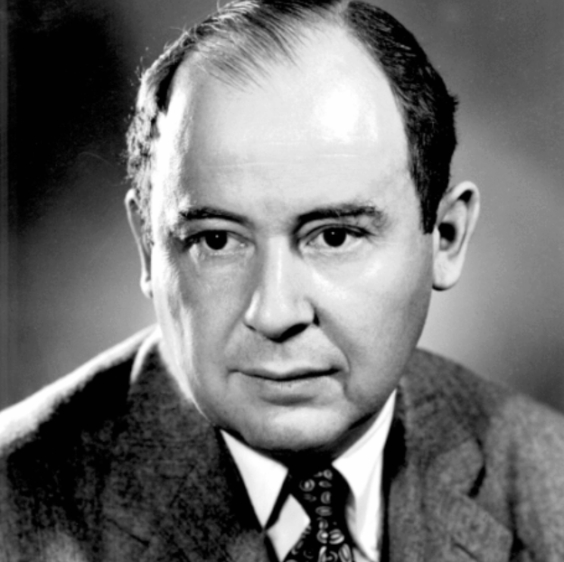

Teoría de juegos: 1944
La Teoría de Juegos, creada por John von Neumann en 1944, estudia cómo las personas toman decisiones cuando sus elecciones afectan a otros. Se relaciona con el sexto problema de Hilbert, que buscaba reglas matemáticas para explicar la probabilidad y la física. Esta teoría es muy útil en economía, política y ciencia, ayudando a entender estrategias en situaciones de competencia o cooperación.
Volver a la página principal